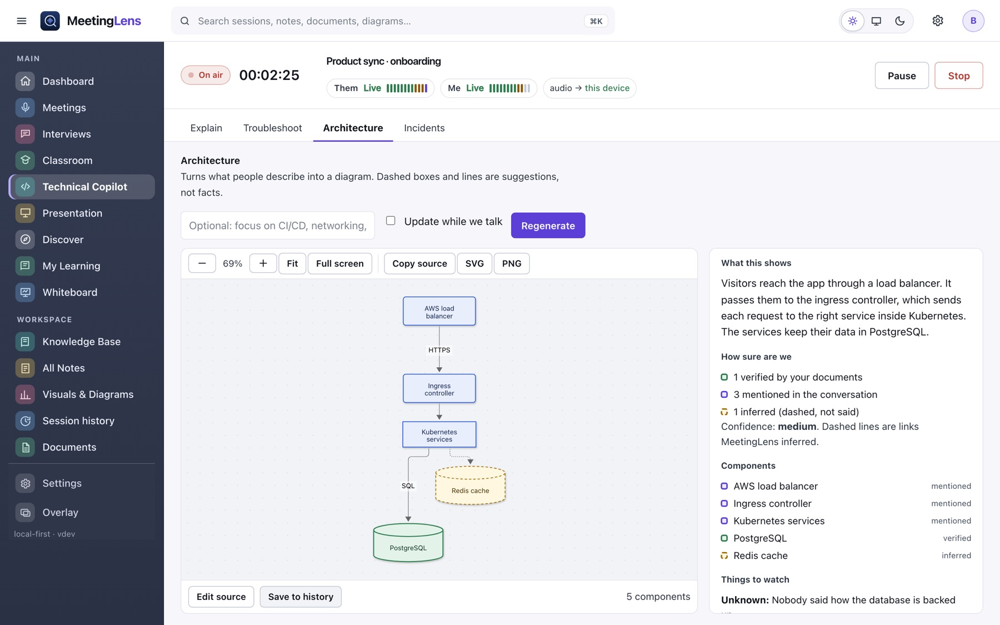

Explain a term or a point
Paste a command, an error or a design question, or leave it empty to explain the latest technical point from the conversation.
Technical Copilot
For Kubernetes, AWS, Azure, Linux, networking, Terraform, CI/CD, databases, monitoring and more. It explains, it plans, it draws, and it never touches your systems.
The installer you can download today is 0.1.5, the first release named Kinviva (it was MeetingLens before). Features marked New in 0.1.5 were added since 0.1.4.
Paste a command, an error or a design question, or leave it empty to explain the latest technical point from the conversation.
A short plain explanation, then how it works with an example and one common mistake, and the key terms in a word list.
Kubernetes, AWS, Azure, Linux, networking, Terraform, CI/CD, DevSecOps, SRE, monitoring, databases, microservices, AI agents and MCP.
Troubleshoot
New in 0.1.5Describe the symptom. You get possible causes, the evidence to collect, commands to try, and how to confirm a fix.

Safety rules
A command is kept only if it looks at things without changing them. The check is code, not the model, and it is tested against dozens of examples.
| Kept | Removed |
|---|---|
kubectl get pods -n prodkubectl describe pod web-1kubectl logs deploy/api --tail=100 | kubectl delete pod web-1kubectl apply -f x.yamlkubectl rollout restart deploy/api |
aws ec2 describe-instancesaz aks show -n c1 -g rg1 | aws ec2 terminate-instancesterraform apply · terraform destroy |
dig example.com · ss -tulpn · df -h · ping -c 3 host | Anything with sudo, pipes, redirects, chaining, rm, or an endless ping or tail -f |
Keep symptoms, hypotheses, evidence, investigative actions, decisions, open questions and follow-ups in one place. Fill it from the conversation, and it only adds what people actually said.
The root cause field stays locked until one hypothesis is marked supported and some evidence is recorded. A wrong confident answer is worse than no answer.
Architecture
New in 0.1.5Say it out loud: a load balancer, an ingress controller, Kubernetes services and PostgreSQL. Kinviva drafts the diagram and explains it in simple words.

The label on each part is decided by code that checks the transcript and your documents.
A document you selected mentions it.
The conversation used those words.
Kinviva suggests it. Dashed, with a warning when there is little evidence.
Diagram source is checked before it is drawn: no links, scripts, HTML or directives, and a size limit. The picture is cleaned again before it is shown.
If there is little evidence, the diagram is clearly marked illustrative and confidence is lowered.
Download Kinviva for Mac or Windows. No account, no subscription.
Download Kinviva